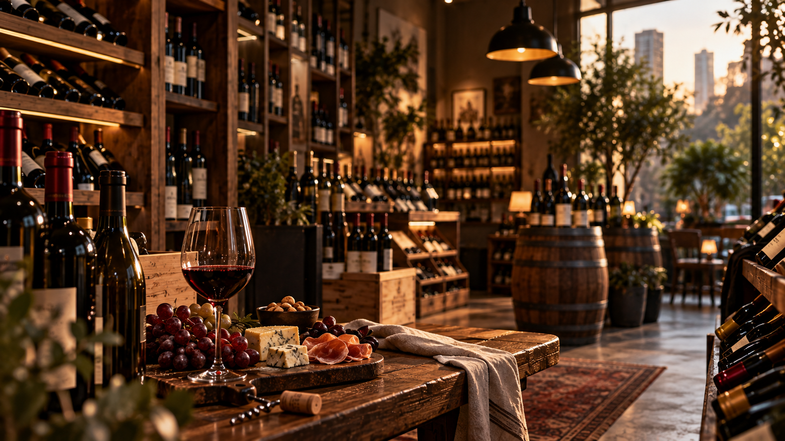
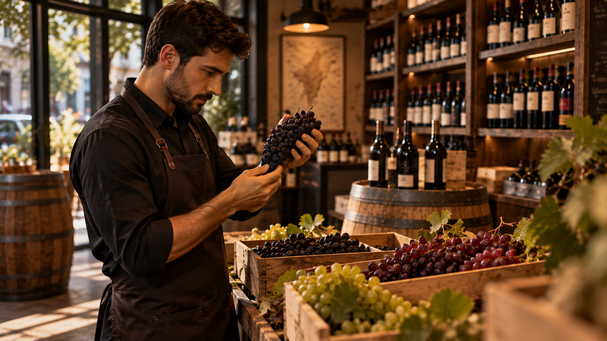

Bem-vindo à Vinharia Agnello
Uma experiência única no mundo dos vinhos.
Há mais de 15 anos em São Paulo,
a Vinharia
Agnello oferece uma seleção de rótulos nacionais
e internacionais,
aliando variedade ao conhecimento
de uma equipe especializada. Seja para descobrir
uma nova uva, escolher um vinho para uma ocasião
especial ou encontrar a melhor harmonização,
nossos
clientes contam com uma orientação personalizada para
tornarcada escolha uma experiência.
Sobre a Vinharia
Escolher um vinho nem sempre é simples. Com tantas uvas, regiões, rótulos e características diferentes, a orientação pode transformar a experiência de compra. Na Vinharia Agnello, conhecimento e atendimento personalizado fazem parte dessa experiência.
 Saiba mais
Saiba mais
Descubra o mundo dos vinhos
O universo dos vinhos é amplo e diverso. Diferentes uvas, regiões, técnicas de produção e safras podem resultar em experiências completamente diferentes. Conhecer essas características é o primeiro passo para encontrar um vinho que combine com seu paladar e com cada momento.


O vinho certo para cada momento
Um almoço em família, um jantar especial ou uma ocasião entre amigos podem pedir escolhas diferentes. Nossa equipe oferece orientação para ajudar você a encontrar opções que combinem com cada ocasião e com diferentes refeições.

Vamos conversar?
Tem dúvidas sobre vinhos ou gostaria de conhecer mais sobre a Vinharia Agnello? Entre em contato conosco.